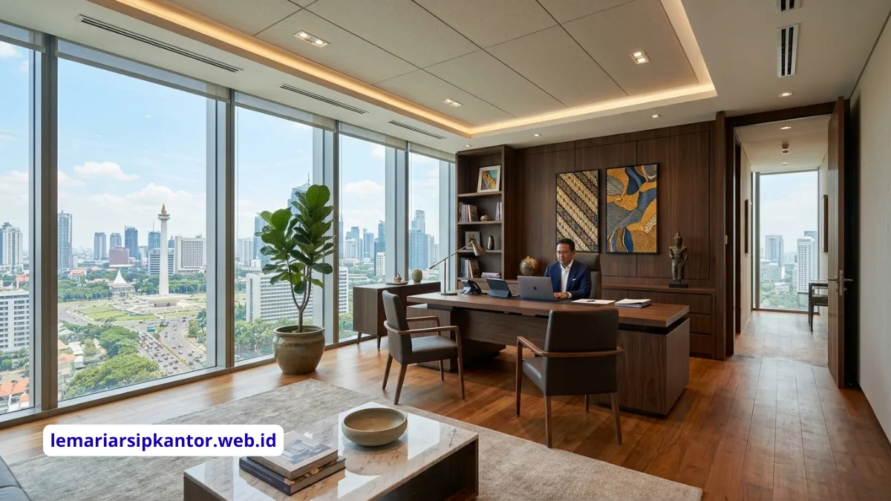

Ideal ukuran meja untuk di ruangan direktur umumnya berkisar antara panjang 150 sampai 200 sentimeter dengan lebar 70 sampai 90 sentimeter, disesuaikan dengan luas ruangan agar tetap proporsional dan nyaman digunakan.
Memilih meja untuk direktur bukanlah sekadar mencari tempat untuk meletakkan dokumen dan laptop. Meja ini adalah pusat komando bagi seorang pemimpin perusahaan, di mana keputusan-keputusan strategis diambil. Oleh karena itu, meja tersebut harus mencerminkan wibawa sekaligus memberikan fungsionalitas yang maksimal. Pemilihan ukuran yang salah tidak hanya akan mengganggu kenyamanan, tetapi juga dapat merusak estetika keseluruhan dari ruangan direktur itu sendiri.
Banyak yang berasumsi bahwa meja direktur selalu harus berukuran raksasa. Namun, pendekatan modern lebih mengutamakan proporsi dan efisiensi ruang. Memaksakan meja yang terlalu besar ke dalam ruangan yang terbatas justru akan membuat pergerakan menjadi tidak nyaman dan ruangan terasa sesak. Di sisi lain, meja yang terlalu kecil di ruangan yang luas bisa membuat posisi direktur terlihat kurang dominan. Oleh sebab itu, menemukan keseimbangan sangatlah krusial.
Berapa Ideal Ukuran Meja untuk Ruangan Direktur
Secara umum, dimensi meja kerja direktur sedikit lebih besar dibandingkan meja staf biasa. Panjang meja ideal untuk direktur berkisar antara 150 cm hingga 200 cm. Panjang ini dirancang untuk dapat menampung komputer, telepon, beberapa tumpukan dokumen penting, serta memberikan ruang kosong yang cukup untuk membaca atau menandatangani dokumen tanpa terasa sempit.
Sementara itu, untuk lebar atau kedalaman meja, ukuran yang direkomendasikan adalah sekitar 70 cm hingga 90 cm. Lebar ini cukup untuk menempatkan monitor komputer pada jarak pandang yang sehat (sekitar 50-70 cm dari mata), serta menyisakan ruang bagi lengan untuk bersandar dengan nyaman saat mengetik atau menulis. Jika Anda kerap menggunakan lebih dari satu monitor, memilih lebar minimal 80 cm sangat dianjurkan.
Untuk ketinggian meja, standar ergonomis yang paling umum diterima adalah sekitar 72 cm hingga 75 cm dari lantai. Ketinggian ini dirancang agar saat duduk, kaki dapat menapak datar di lantai dan siku membentuk sudut 90 derajat saat mengetik. Memilih kursi kerja yang dapat disesuaikan ketinggiannya (adjustable) adalah pasangan wajib agar postur tubuh dapat dijaga dengan baik tanpa memandang tinggi badan penggunanya.
Beberapa meja direktur kelas atas juga menawarkan fitur ketinggian yang bisa diatur, atau yang sering disebut sebagai standing desk. Bagi direktur yang menghabiskan banyak waktu di belakang meja, fitur ini sangat membantu untuk mencegah kelelahan punggung dan meningkatkan sirkulasi darah dengan memberikan opsi bekerja sambil berdiri.
Bagaimana Cara Menentukan Ukuran Meja Sesuai Luas Ruangan
Menentukan ukuran meja tidak bisa dilepaskan dari kondisi fisik ruangan itu sendiri. Sebuah meja direktur harus diletakkan dengan mempertimbangkan ruang gerak dan letak perabot lainnya. Berikut adalah langkah-langkah praktis untuk memastikannya:
- Ukur Ruangan dengan Akurat: Sebelum membeli, ketahui persis dimensi panjang dan lebar ruangan direktur.
- Pertimbangkan Area Sirkulasi: Pastikan ada setidaknya 90 cm hingga 120 cm ruang kosong di belakang meja untuk kursi kerja dan area pergerakan mundur.
- Beri Jarak untuk Kursi Tamu: Jika meja direktur akan dihadapkan dengan kursi tamu di depannya, sediakan ruang sekitar 100 cm hingga 150 cm dari tepi depan meja.
- Pikirkan Jalur Berjalan: Pastikan meja tidak menghalangi jalur masuk utama atau jalur menuju fasilitas lain dalam ruangan, seperti lemari arsip atau pintu kamar mandi pribadi.
- Perhatikan Jendela: Hindari menempatkan meja tepat membelakangi jendela tanpa penutup cahaya, agar layar komputer tidak terkena silau (glare) yang mengganggu.
- Gunakan Pita Perekat (Masking Tape): Cara termudah membayangkan ukuran meja adalah dengan menempelkan pita perekat di lantai sesuai dimensi meja yang diincar, lalu coba berjalan di sekitarnya.
Jika ruangan Anda tergolong kecil, misalnya kurang dari 3x3 meter, sebaiknya pilih meja dengan panjang maksimal 150 cm atau gunakan meja berbentuk L yang dapat disandarkan di sudut. Hal ini akan membebaskan area tengah ruangan sehingga tidak terasa sumpek.
Sebaliknya, pada ruangan yang sangat luas, Anda memiliki kebebasan untuk menggunakan meja berukuran 200 cm atau lebih. Anda bahkan bisa memadukannya dengan meja tambahan (credenza) di bagian belakang, yang berfungsi sebagai tempat penyimpanan sekaligus menambah kesan mewah dan profesional.
Apa Saja Faktor Kenyamanan yang Memengaruhi Pemilihan Meja Direktur
Selain ukuran, ada berbagai elemen lain yang sangat memengaruhi kenyamanan seorang direktur dalam menggunakan mejanya. Memperhatikan elemen-elemen ini akan memastikan bahwa produktivitas tetap maksimal sepanjang hari:
- Material Meja: Material solid wood (kayu solid) sering menjadi pilihan utama karena memberikan kesan elegan, kokoh, dan berwibawa. Pastikan permukaannya di-finishing dengan baik agar rata dan nyaman untuk alas menulis.
- Manajemen Kabel (Cable Management): Di era digital, direktur memiliki banyak perangkat elektronik. Meja yang baik harus dilengkapi dengan sistem jalur kabel yang rapi agar permukaan meja tidak berantakan.
- Desain Sisi Tepi Meja (Edge Profile): Tepi meja yang terlalu tajam dapat menyebabkan ketidaknyamanan pada lengan. Pilihlah meja dengan tepi yang sedikit membulat (beveled atau rounded).
- Ketersediaan Laci: Meja direktur biasanya memerlukan laci yang dilengkapi kunci untuk menyimpan dokumen konfidensial atau barang pribadi berharga.
Faktor lain yang sering diremehkan adalah ruang di bawah meja. Pastikan area tersebut cukup luas dan tidak terhalang oleh palang atau struktur kaki yang rumit, sehingga Anda bisa merentangkan kaki dengan leluasa. Kenyamanan kaki sangat penting untuk mengurangi kelelahan selama duduk berjam-jam.

Ilustrasi: Tata letak meja dan perabot pendukung di ruangan direktur.
Bagaimana Memilih Bentuk Meja yang Tepat untuk Ruangan Direktur
Bentuk meja tidak hanya menentukan tampilan, tetapi juga memengaruhi cara direktur bekerja dan berinteraksi. Beberapa bentuk umum untuk ruangan eksekutif adalah:
- Meja Lurus (Rectangular): Bentuk klasik yang tidak pernah salah. Sangat fungsional, mudah ditempatkan, dan menonjolkan kewibawaan saat diletakkan menghadap pintu masuk.
- Meja Bentuk L (L-Shape): Ideal untuk direktur yang memisahkan area komputer dan area dokumen/meeting kecil. Bentuk ini memberikan ruang permukaan yang sangat luas tanpa harus memakan terlalu banyak tempat di tengah ruangan.
- Meja Bentuk U (U-Shape): Cocok untuk mereka yang membutuhkan banyak ruang kerja untuk membeberkan berbagai proyek sekaligus. Biasanya dilengkapi dengan credenza di satu sisinya. Bentuk ini menuntut ukuran ruangan yang besar.
- Meja Melengkung (Bow Front): Memiliki sisi depan (menghadap tamu) yang melengkung keluar. Bentuk ini lebih ramah dan memberikan ruang lebih untuk kursi tamu, serta kesan visual yang sangat mewah.
Pilihlah bentuk yang paling mendukung gaya kepemimpinan Anda. Jika Anda sering menerima tamu atau berdiskusi dengan staf di meja, meja dengan ekstensi atau bow front adalah pilihan yang sangat bijaksana untuk memfasilitasi interaksi.
Bagaimana Menata Perabot Pendukung di Sekitar Meja Direktur
Sebuah meja direktur yang hebat akan kehilangan fungsinya jika tidak didukung oleh perabot lain yang tertata dengan benar. Penataan yang baik akan menciptakan ekosistem kerja yang efisien.
- Credenza dan Lemari Arsip: Letakkan credenza di belakang kursi direktur untuk menyimpan dokumen ekstra, serta gunakan lemari arsip besi atau brankas di sudut ruangan untuk barang-barang berharga perusahaan.
- Area Tamu: Jangan mencampuradukkan area kerja dan area tunggu. Tempatkan sepasang kursi tamu dan meja kecil (coffee table) yang terpisah dari meja direktur untuk percakapan santai atau informal.
- Pencahayaan: Pastikan ada perpaduan yang baik antara pencahayaan umum (general lighting) dan lampu meja (task lighting). Lampu meja yang elegan juga berfungsi sebagai elemen dekoratif.
Selain fungsionalitas, jangan lupakan sentuhan personal. Menempatkan tanaman hias, foto keluarga, atau penghargaan di atas credenza dapat membuat ruangan terasa lebih hidup tanpa mengurangi profesionalitas.
Kesimpulan
Menentukan ideal ukuran meja untuk ruangan direktur memerlukan pertimbangan yang matang terhadap dimensi ruangan, kebutuhan fungsional, dan estetika yang ingin ditampilkan. Ukuran standar panjang 150-200 cm dan lebar 70-90 cm dapat dijadikan patokan, namun penyesuaian wajib dilakukan agar meja tersebut selaras dengan ruang kerjanya.
Lebih dari sekadar ukuran, kenyamanan direktur bergantung pada faktor ergonomi, bentuk meja, material, hingga penataan perabotan pendukung di sekitarnya. Dengan perencanaan yang teliti, meja direktur tidak hanya akan menjadi tempat kerja yang nyaman, tetapi juga simbol kepemimpinan yang memperkuat citra perusahaan Anda.
PERTANYAAN UMUM (FAQ)

BUDI SANTOSO
Seorang praktisi dan konsultan manajemen kearsipan dengan pengalaman lebih dari 15 tahun membantu BUMN dan perusahaan multinasional menata sistem dokumen mereka secara efisien dan aman.